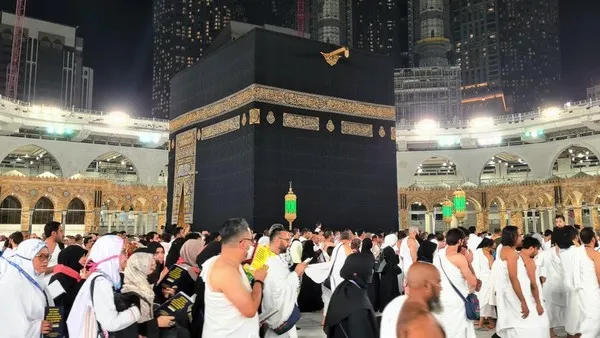

1. Pengantar Keutamaan Ibadah Umroh
Menunaikan ibadah Umroh merupakan kerinduan setiap jiwa Muslim di seluruh penjuru dunia. Umroh secara bahasa berarti ziarah atau berkunjung. Dalam syariat Islam, Umroh adalah berkunjung ke Baitullah (Ka'bah) di Kota Suci Makkah Al-Mukarramah untuk melaksanakan serangkaian ritual ibadah tertentu sesuai ketentuan syariat.
Umroh sering dijuluki sebagai Haji Asghar (Haji Kecil). Rasulullah SAW bersabda mengenai keutamaan Umroh:
2. Syarat Wajib & Keabsahan Umroh
Sebelum melaksanakan ibadah Umroh, setiap Muslim wajib memenuhi syarat-syarat sebagai berikut:
- Islam: Beragama Islam dan berakal sehat.
- Baligh: Telah mencapai usia dewasa.
- Merdeka: Bukan merupakan hamba sahaya.
- Istitha'ah (Mampu): Mampu secara finansial, kebugaran fisik, serta jaminan keamanan selama perjalanan.
- Mahram (Bagi Wanita): Memenuhi ketentuan pendampingan syar'i sesuai regu perjalanan resmi.
3. Empat Rukun Utama Umroh
Rukun Umroh adalah amalan-amalan pokok yang wajib dilakukan dan tidak dapat digantikan dengan denda (dam). Jika salah satu rukun ditinggalkan, maka ibadah Umrohnya tidak sah. 4 Rukun Umroh meliputi:
- Ihram: Niat memulai ibadah Umroh yang disertai berpakaian ihram dari Miqat.
- Thawaf: Mengelilingi Ka'bah sebanyak 7 kali putaran.
- Sa'i: Berjalan/berlari-lari kecil antara bukit Shafa dan Marwah sebanyak 7 kali perjalanan.
- Tahallul: Memotong atau mencukur sebagian rambut kepala.

4. Langkah 1: Niat Ihram & Berpakaian di Miqat
Miqat adalah garis batas tempat dimulainya niat ihram. Bagi jamaah Indonesia yang terbang menuju Madinah terlebih dahulu, Miqat ihramnya biasanya dilakukan di Zulhulaifah (Bir Ali). Sedangkan bagi yang langsung terbang ke Jeddah, Miqat dilakukan di atas pesawat (sebelum melewati Yalamlam) atau di Bandara Jeddah.
Sunnah Sebelum Ihram:
- Mandi sunnah ihram, memotong kuku, dan merapikan kumis/rambut halus.
- Mengenakan wewangian di badan (sebelum niat ihram).
- Mengenakan pakaian ihram: 2 lembar kain putih tanpa jahitan untuk pria (satu disarungkan, satu disendangkan), serta pakaian menutup aurat bebas sederhana bagi wanita.
- Melakukan shalat sunnah ihram 2 rakaat di masjid Miqat.
Lafaz Niat Umroh:
لَبَّيْكَ اللَّهُمَّ عُمْرَةً
"Labbaikallahumma 'umratan"
Artinya: "Aku penuhi panggilan-Mu ya Allah untuk menunaikan ibadah Umroh."
لَبَّيْكَ اللَّهُمَّ لَبَّيْكَ، لَبَّيْكَ لاَ شَرِيْكَ لَكَ لَبَّيْكَ، إِنَّ الْحَمْدَ وَالنِّعْمَةَ لَكَ وَالْمُلْكَ لاَ شَرِيْكَ لَكَ
5. Langkah 2: Thawaf 7 Putaran di Ka'bah
Setibanya di Masjidil Haram Makkah, jamaah berwudhu dan menuju Ka'bah untuk melaksanakan Thawaf. Thawaf dilakukan sebanyak 7 putaran berlawanan arah jarum jam, dimulai dan diakhiri di sudut Hajar Aswad.
Syarat & Adab Thawaf:
- Suci dari hadats kecil dan besar (berwudhu).
- Menutup aurat dengan sempurna.
- Ka'bah berada di sebelah kiri jamaah selama mengelilingi.
- Disunnahkan Idhtiba' (membuka bahu kanan bagi pria) selama Thawaf.
- Disunnahkan Raml (berlari-lari kecil) pada 3 putaran pertama bagi pria.
Di antara Rukun Yamani dan Hajar Aswad, disunnahkan membaca doa:
رَبَّنَا آتِنَا فِي الدُّنْيَا حَسَنَةً وَفِي الآخِرَةِ حَسَنَةً وَقِنَا عَذَابَ النَّارِ
Setelah selesai 7 putaran Thawaf, tutuplah kedua bahu kembali, lalu tunaikan shalat sunnah Thawaf 2 rakaat di belakang Maqam Ibrahim (atau di area masjid yang memungkinkan) dan minumlah air Zamzam sepuasnya.
6. Langkah 3: Sa'i antara Shafa dan Marwah
Sa'i adalah berjalan dan berlari-lari kecil sebanyak 7 kali perjalanan antara bukit Shafa dan bukit Marwah. Perjalanan dari Shafa ke Marwah dihitung 1 putaran, dan Marwah ke Shafa dihitung putaran berikutnya (berakhir di Marwah pada putaran ke-7).
7. Langkah 4: Tahallul (Potong Rambut)
Tahallul merupakan penutup seluruh rangkaian ritual ibadah Umroh. Tahallul dilakukan dengan mencukur atau memotong sekurang-kurangnya 3 helai rambut kepala di bukit Marwah. Bagi jamaah pria, sangat disunnahkan mencukur gundul (halq) karena mendapat doa rahmat 3 kali dari Nabi SAW.
Setelah Tahallul, seluruh larangan ihram kembali halal dan ibadah Umroh selesai dengan sempurna.
8. Hal-Hal Yang Dilarang Saat Berihram
Selama masih dalam keadaan berihram (sebelum Tahallul), jamaah dilarang keras:
- Memotong kuku, rambut, atau mencabut bulu badan.
- Menggunakan wewangian atau minyak wangi di pakaian/badan.
- Menutup kepala (bagi pria) dengan peci, topi, atau sorban.
- Mengenakan pakaian berjahit yang membentuk lekuk tubuh (bagi pria).
- Menutup wajah (cadar) dan sarung tangan (bagi wanita).
- Menikah, menikahkan, atau melamar.
- Melakukan hubungan suami istri atau bermesraan (rafats).
- Berburu atau membunuh hewan darat.
9. Tips Praktis Agar Umroh Maqbul dan Mabrur
- Luruskan Niat semata karena Allah: Jauhkan diri dari sifat riya' atau sekadar ingin foto di media sosial.
- Jaga Stamina Kebugaran: Perbanyak minum air putih dan istirahat cukup sebelum ritual fisik dimulai.
- Pahami Doa dan Dzikir: Pelajari arti doa yang dibaca agar hati tersentuh dan khusyuk.
- Pilih Travel Berizin Resmi: Pastikan Anda berangkat bersama travel umroh resmi berizin PPIU Kemenag RI seperti AS-SIDDIQ Travel agar ibadah aman dan tenang.